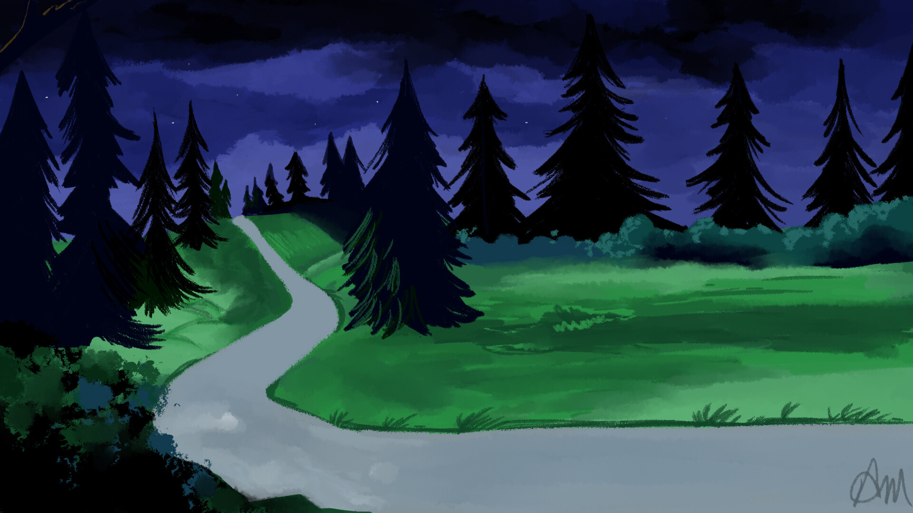
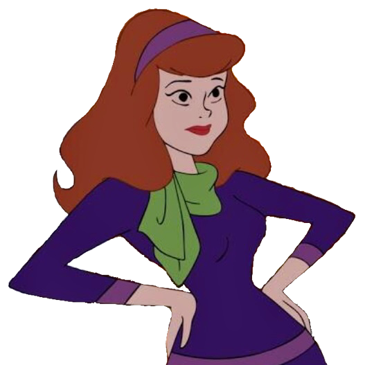
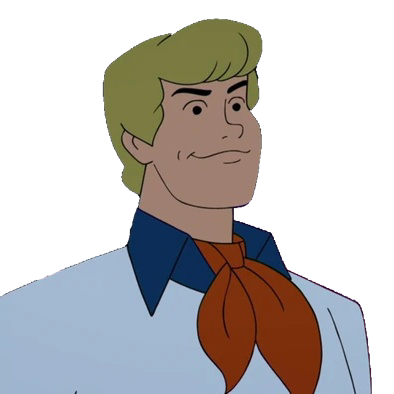
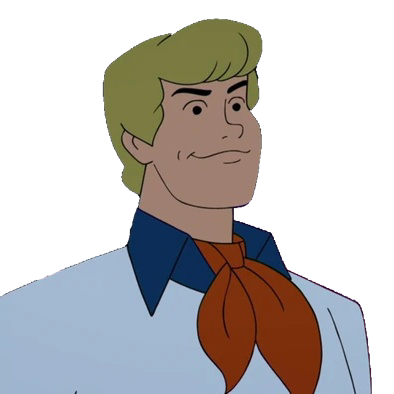
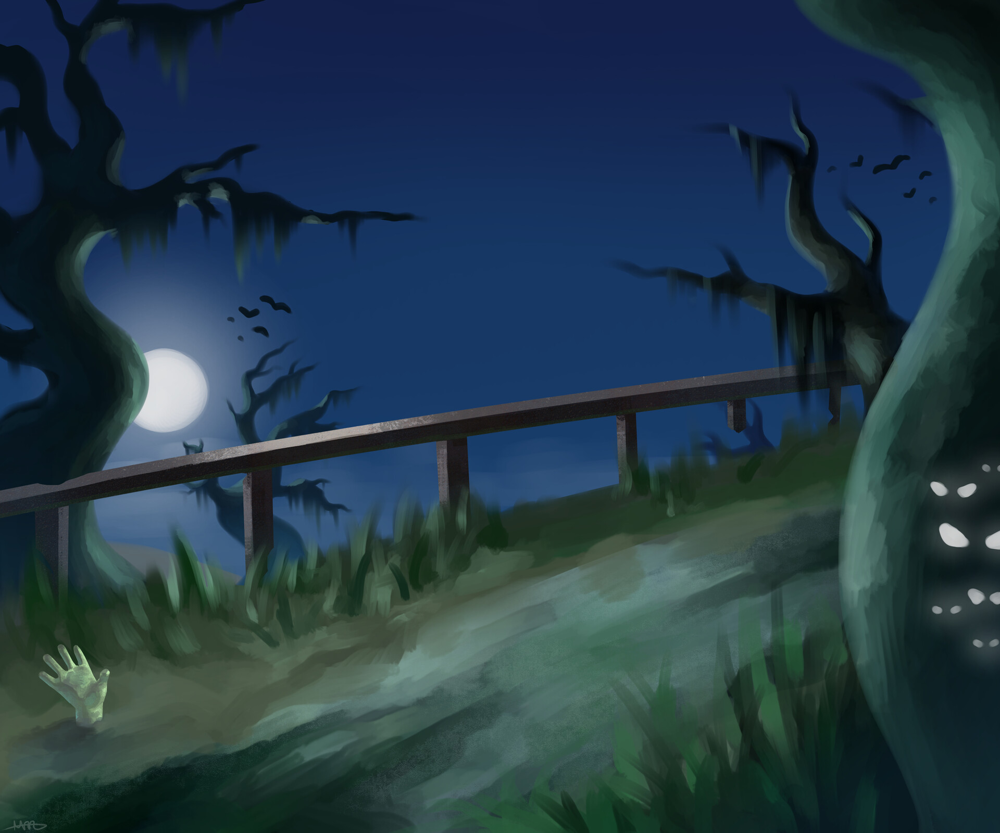
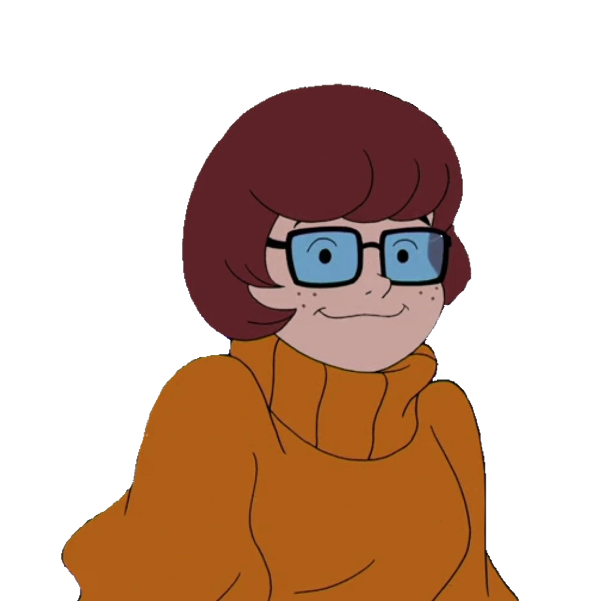

Background
Since the original series “Scooby-Doo, Where Are You!” launched in 1969, the Scooby-Doo franchise has expanded into numerous television series and movies, with the latest series “Velma” premiering as of the time of writing, in March 2023.
The main premise of most series within the franchise revolves around the “Mystery Inc.” gang, comprising of the main characters Fred Jones, Daphne Blake, Velma Dinkley, Shaggy Rogers, and their talking Great Dane, Scooby-Doo. They travel around in their van, the Mystery Machine, to investigate spooky happenings and unmask the monsters behind them.
The Crew
|   |
 

|

|


|
 |
Motivation
The franchise has remained popular with audiences of all ages for over 50 years, and each of the five heroes have become some of the most popular characters in Western media. In particular, their strong friendships and ability to work as a team to solve mysteries and fight crime is at the heart and soul of its popularity.
While all viewers have their favourites, each hero has something unique to bring to the table, and it is the purpose of this data story to uncover the unique qualities of each hero.
The Dataset
introduction of dataset here
The dataset used here is Scooby-Doo Complete by @plummye on Kaggle. The creator spent about a year watching every Scooby-Doo iteration, to produce this dataset containing 603 records, each tracking 75 variables, from iterations aired over 53 years (from 1969 to 2021).
The Scooby-Doo Crew Against Monsters
Top 5 Common Types of Monsters
This section examines how the Scooby-Doo crew performs against different types of monsters. To make the analysis more accurate, we will concentrate on the top 5 most frequent monster types among the 12 present in the series and movies. These top 5 types, which are Animal, Ghost, Mythical, Possessed Object, and Undead, were determined from a donut chart.
-
Animal type monsters are usually portrayed as big and ferocious creatures, such as a werewolf or a giant snake.
-
Ghost type monsters are one of the most iconic monsters, They are often portrayed as translucent, floating beings with supernatural powers such as disappearing at will.
-
Mythical type monsters are usually based on mythical creatures from various cultures, such as dragons, or centaurs. They often have unique abilities or weaknesses that make them difficult to catch.
-
Possessed Object type monsters are usually inanimate objects, such as a suit of armor or a puppet, that are animated by a supernatural force. They can be difficult to catch because they are often small and agile, and can move unpredictably.
-
Undead type monsters are usually portrayed as zombies, vampires, or mummies. They are often slow-moving and physically strong, and may be able to turn others into undead creatures.
How the Heroes Fare Against the Top 5 Common Monsters
A radar chart is used to obtain an overview of how each hero performs against the top 5 common types of monsters. The chart displays the strength of five heroes - Scooby, Fred, Shaggy, Velma, and Daphne - against five common types of monsters, including Animal, Ghost, Mythical, Possessed Object, and Undead. Each axis on the chart represents a monster type, and each data point represents the hero's strength against that monster type.
The values depicted in the chart are determined by subtracting the number of times the monster captured the hero from the number of times the hero has caught the monster. This calculation can be interpreted as the hero's overall effectiveness against the monster.
The size of the area occupied by each hero on the chart decreases in the order of Scooby > Fred > Shaggy > Velma > Daphne, representing their respective strengths. Therefore, the chart allows for a quick visual comparison of the heroes' relative strengths and weaknesses against the different types of monsters.
A Deeper Analysis into each Hero
In this analysis, we will delve deeper into each hero's capabilities. To do so, we will use a horizontal bar chart for each hero, which shows the rate at which they catch a particular type of monster, as well as the rate at which they are captured by that monster.
While the earlier radar chart provides a net strength score for each hero against each monster type, it has a unit in terms of the number of monsters caught or captured, which can be problematic. For instance, as we saw in the donut chart, ghosts were the most common type of monster, and as a result, the radar chart suggested that almost every crew member was proficient in catching ghosts. However, this is an unfair comparison as it doesn't account for the fact that there were more ghosts to catch than other types of monsters.
To address this issue, the horizontal bar chart standardizes the number of monsters to 100% and presents the rates as a percentage of the total. This allows for a fair comparison across all monster types, enabling us to compare each character's abilities against different monsters.
"Would you do it for a Scooby Snack?"
Scooby will do anything for a Scooby Snack. These snacks are often used as an incentive by the four human heroes to convince Scooby-Doo to participate in dangerous or frightening schemes, such as acting as bait for a monster, helping to solve the mystery in the end.
Interestingly, Daphne, who had the lowest success rate in catching monsters and avoiding being captured, is the most generous when it comes to offering Scooby snacks, giving him a total of 49 throughout the show. These snacks proved to be essential in eventually capturing the monster.
Shaggy, who is Scooby's owner and best friend, comes in second place, having given Scooby 43 snacks. Shaggy is well-known for his love of food and often shares his meals with Scooby, including the coveted Scooby snacks.
On the other hand, Fred is the least generous when it comes to giving Scooby snacks. While there is no official explanation for this, it is possible that as the leader of the group, Fred takes his responsibilities seriously and wants to ensure that Scooby remains focused on the task at hand. Additionally, Fred is often portrayed as being physically fit and may not want to encourage Scooby's fondness for food.
It is worth noting that Scooby also occasionally rewards himself with snacks to motivate himself, albeit rarely.
Conclusion
present conclusions on the strengths and weaknesses of each hero (something like a pokemon card)
Daphne

Daphne Blake
-
Snack Savant
expert at rewarding Scooby
-
Monster Mishandler
easily captured by monsters
Fred
Fred Jones
-
Monster Master
skilled at monster fighting
-
Snack Scrooge
stingy with Scooby snacks
Scooby
Scooby-Doo
-
Monster Master
top-notch monster fighter
-
Scaredy Cat
easily frightened without treats
Shaggy

Shaggy Rogers
-
Ghost & Ghoul Getter
skilled at catching ghost and undead types
-
Possession Paranoid
terrified of possessed objects
Velma
Velma Dinkley
-
Undead Ace
master of undead monster combat
-
Spectral Struggler, Mythical Misstep
struggles with ghost and mythical types